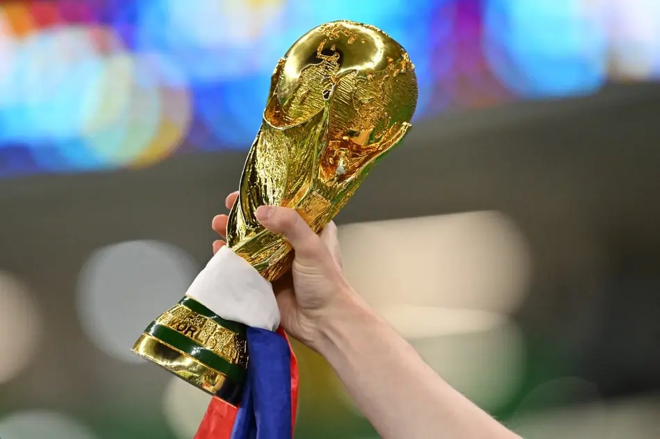

COPA DO
MUNDO
FIFA
O torneio mais assistido de todo o planeta, unindo nações, culturas e paixões a cada quatro anos.

Sobre a Copa do Mundo

A Copa do Mundo FIFA é o campeonato mundial de futebol masculino
entre seleções nacionais filiadas à FIFA. Realizada a cada quatro anos desde 1930 — com interrupções
em 1942 e 1946 por conta da Segunda Guerra Mundial é o evento esportivo mais assistido do planeta.
O torneio mobiliza bilhões de pessoas em todos os continentes, paralelamente às
fases de classificação que envolvem mais de 200 seleções ao longo de três anos de disputa.
História da Copa do Mundo
A história da Copa do Mundo FIFA começou em 1930, no Uruguai, com a realização da primeira edição do torneio. Idealizada pela FIFA, a competição surgiu com o objetivo de reunir as melhores seleções do mundo em um único campeonato internacional.
Nas primeiras décadas, a Copa enfrentou desafios como a Segunda Guerra Mundial, que levou à suspensão das edições de 1942 e 1946. Após esse período, o torneio ganhou ainda mais força e passou a crescer em popularidade ao redor do mundo.
Ao longo dos anos, grandes seleções marcaram época, como o Brasil, maior campeão da história, além de países como Alemanha, Itália e Argentina, que também conquistaram múltiplos títulos.
A Copa do Mundo também revelou jogadores lendários, como Pelé, Maradona, Zidane e Messi, que ficaram eternizados por suas atuações históricas e momentos decisivos.
Com o avanço da tecnologia e da globalização, o torneio se tornou um dos maiores eventos esportivos do planeta, reunindo bilhões de espectadores e promovendo integração cultural entre diferentes nações.
Atualmente, a Copa do Mundo continua evoluindo, com novas seleções ganhando destaque e o futebol se tornando cada vez mais competitivo e global.
Linha do Tempo
1930: Primeira edição da Copa do Mundo, realizada no Uruguai. O país anfitrião venceu a final contra a Argentina por 4 a 2, conquistando o título inaugural.
1950: A Copa do Mundo de 1950, realizada no Brasil, é lembrada pela surpreendente vitória do Uruguai sobre o Brasil na final, em um jogo conhecido como "Maracanazo".
1954: A Copa do Mundo de 1954, realizada na Suíça, foi marcada pela participação do Brasil, que venceu a final contra a Áustria por 6 a 1.
1958: A Copa do Mundo de 1958, realizada na Suécia, foi marcada pela participação do Brasil, que venceu a final contra a União Soviética por 5 a 2.
1962: A Copa do Mundo de 1962, realizada no Chile, foi marcada pela participação do Brasil, que venceu a final contra a União Soviética por 3 a 1.
1970: A Copa do Mundo de 1970, realizada no México, é considerada uma das melhores edições da história. O Brasil, liderado por Pelé, conquistou seu terceiro título mundial ao vencer a Itália por 4 a 1 na final.
1998: A Copa do Mundo de 1998, realizada na França, marcou a primeira vez que o torneio contou com 32 equipes. A França venceu a final contra o Brasil por 3 a 0, conquistando seu primeiro título mundial.
2002: A Copa do Mundo de 2002, realizada no Japão e na Coreia do Sul, foi marcada pela participação do Brasil, que venceu a final contra a Alemanha por 2 a 0, conquistando seu quarto título mundial.
2006: A Copa do Mundo de 2006, realizada na Alemanha, foi marcada pela participação do Brasil, que venceu a final contra a Itália por 3 a 0, conquistando seu quinto título mundial.
2010: A Copa do Mundo de 2010, realizada na África do Sul, foi marcada pela participação do Brasil, que venceu a final contra a Holanda por 3 a 2, conquistando seu sexto título mundial.
2014: A Copa do Mundo de 2014, realizada no Brasil, foi marcada por momentos emocionantes e surpresas. A Alemanha conquistou seu quarto título mundial ao vencer a Argentina por 1 a 0 na final.
2018: A Copa do Mundo de 2018, realizada na Rússia, foi marcada por momentos inesquecíveis. A França venceu a final contra a Croácia por 4 a 1, conquistando seu segundo título mundial.
2022: A Copa do Mundo de 2022, realizada no Catar, foi marcada por momentos inesquecíveis. A Argentina venceu a final contra a França por 4 a 3 em pênaltis, conquistando seu primeiro título mundial desde 1978.
Recordes da Copa do Mundo
Pelé é o maior artilheiro da história da Copa do Mundo, com um total de 12 gols marcados em 14 jogos disputados entre 1958 e 1970.
O Brasil é a seleção mais vitoriosa da história da Copa do Mundo, com um total de 5 títulos conquistados em 1958, 1962, 1970, 1994 e 2002.
A Alemanha é a seleção com mais participações em finais de Copa do Mundo, tendo disputado um total de 8 finais entre 1954 e 2014.
O jogador Miroslav Klose é o maior artilheiro da história das Copas do Mundo, com um total de 16 gols marcados em 24 jogos disputados entre 2002 e 2014.
A Copa do Mundo de 2014, realizada no Brasil, foi a edição com o maior número de gols marcados, totalizando 171 gols em 64 jogos disputados.
Curiosidades da Copa
Maior campeão
O Brasil é a seleção com mais títulos da Copa do Mundo, somando 5 conquistas.
Copa de 2026
A próxima Copa do Mundo será sediada por Estados Unidos, México e Canadá.
Pelé eterno
Pelé continua sendo o único jogador tricampeão mundial da história.
Itália na seca
Fazem 12 anos que a tetracampeã Seleção da Itália, não se classifica para a copa do mundo!